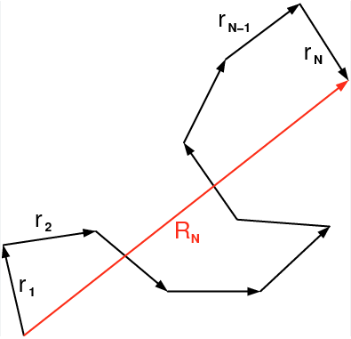

26 Polymers
26.1 Freely Jointed Chain
One of the simplest models of a polymer chain is a 3D random walk with constant step length, the freely jointed chain (FJC). The step length corresponds to a distance \(b\), which is called the Kuhn length. The Kuhn length is typically larger than the bond length between the monomers of the polymer as neighboring bond may still have correlations. Neigboring Kuhn segments are in the model of the FJC completly independent. The image below shows an example random walk

26.1.1 Mean-squared end-to-end distance of a FJC
Let us calculate some properties of the freely jointed chain. One is the sum of all bonding vectors \(\vec{r}_i\). This will give us the end-to-end distance, vector of the polymer chain.
\[ \vec{R}_N=\sum_{i=1}^N \vec{r}_i \]
Of course, this is only a single realisation of a polymer conformation. In general, the polymer can accommodate many different conformations with different end-to-end vectors \(\vec{R}_N\). Therefore, ensemble average of the end to end vector has to be zero.
\[ \left\langle\vec{R}_N\right\rangle=0 . \]
The next higher moment of the end to vector distance is the mean squared end to end distance. The mean squared end to end distance is calculated by
\[ \begin{aligned} \left\langle R^2\right\rangle & \equiv\left\langle\vec{R}_N^2\right\rangle=\left\langle\vec{R}_N \cdot \vec{R}_N\right\rangle=\left\langle\left(\sum_{i=1}^N \vec{r}_i\right) \cdot\left(\sum_{j=1}^N \vec{r}_j\right)\right\rangle \\ & =\sum_{i=1}^N \sum_{j=1}^N\left\langle\vec{r}_i \cdot \vec{r}_j\right\rangle . \end{aligned} \]
The dot product in the last double sum can now be replaced by
\[ \vec{r}_i \cdot \vec{r}_j=b^2 \cos \theta_{i j} \]
such that we obtain
\[ \left\langle R^2\right\rangle=\sum_{i=1}^N \sum_{j=1}^N\left\langle\vec{r}_i \cdot \vec{r}_j\right\rangle=b^2 \sum_{i=1}^N \sum_{j=1}^N\left\langle\cos \theta_{i j}\right\rangle \]
As all bond angles \(\theta_{ij}\) are allowed equally, the ensemble average over the cosine is just zero and we obtain
\[ \left\langle R^2\right\rangle=n \cdot b^2=L \cdot b \]
which is not too surprising. This is the random walk with a step length of \(b\) but not with time steps but \(N\) segments. While the contour length of the polymer would be \(N^2b^2\) the mean sqared end to end distance is shorter and just \(Nb^2\).
26.1.2 Distribution of the end-to-end distances
The calculation before just addressed the mean squared end to end distance. Again, since this is a random walk, which has many realisations, there must be also a distribution function for the end to end distance. This will tell us by how much the end to end distance fluctuates, and what is the probability to find a certain end to end distance. If we look just at the first segment, we have an end to end vector \(\vec{R}_1\) magnitude squared, and we can calculate the length of this vector from its components.
\[ \left\langle\left|\vec{R}_1\right|^2\right\rangle=\left\langle x_1^2+y_1^2+z_1^2\right\rangle=b^2=\left\langle x_1^2\right\rangle+\left\langle y_1^2\right\rangle+\left\langle z_1^2\right\rangle \]
As the vector can rotate isotropically, the mean squared value of each of the components is just one third of the square length of the Kuhn segment \(b\), i.e.
\[ \left\langle x_1^2\right\rangle=\left\langle y_1^2\right\rangle=\left\langle z_1^2\right\rangle=b^2 / 3 \]
That means now, a chain of \(N\) segments results in the mean squared components which are
\[ \left\langle x_N^2\right\rangle=\left\langle y_N^2\right\rangle=\left\langle z_N^2\right\rangle=N \cdot b^2 / 3 \]
This is the variance of how far a random walk travels in x-direction after \(N\) step. The distribution function for the random walk as we know is a Gaussian:
\[ p(x , N)=\frac{1}{\sqrt{2 \pi\left(N b^2 / 3\right)}} e^{-x^2 /\left(2 N b^2 / 3\right)} \]
As all 3 dimensions of the random walk are equivalent, i.e.
\[ \left\langle R_N^2\right\rangle=\left\langle x_N^2\right\rangle+\left\langle y_N^2\right\rangle+\left\langle z_N^2\right\rangle=3 \cdot N \cdot b^2 / 3=N \cdot b^2 \]
the probability density of finding a certain end to end vector is the product of the three 1d probability densities
\[ \begin{aligned} p(\vec{R} , N) & =p(x, N) \cdot p(y, N) \cdot p(z, N) \\ & =\sqrt{\frac{3}{2 \pi N b^2}} e^{-3 x^2 /\left(2 N b^2\right)} \sqrt{\frac{3}{2 \pi N a^2}} e^{-3 y^2 /\left(2 N b^2\right)} \sqrt{\frac{3}{2 \pi N a^2}} e^{-3 z^2 /\left(2 N b^2\right)} \end{aligned} \]
and thus
\[ p(\vec{R} , N)=\left(\frac{3}{2 \pi N b^2}\right)^{\frac{3}{2}} e^{-3 R^2 /\left(2 N b^2\right)} \]
The corresponding radial distribution function then reads
\[ p(R , N) d R=\left(\frac{3}{2 \pi N b^2}\right)^{\frac{3}{2}} e^{-3 R^2 /\left(2 N b^2\right)} 4 \pi R^2 d R \]
Such and end to end distribution could be measured if both end of the polymer can be taggeg for example with a dye molecule. The distance of the two dye molecules can then be measured, for example, with the help of fluorescence resonance energy transfer (FRET) if some additional requirements are fullfilled. This can be done for a single polymer molecule and the above ensemble averages could then also be replaced by a time average since the polymer fluctuates due to thermal energy.
26.1.3 Radius of gyration
Not in all cases the end to end distance can be measured or even two ends exist (circular polymers). Then, it more intersting to characterize the spatial extent of the polymer chain by the radius of gyration \(R_{g}\), whose square is defined like this \[ R_{\mathrm{g}}^2 \equiv \frac{1}{N} \sum_{i=1}^N\left(\vec{R}_i-\vec{R}_{\mathrm{cm}}\right)^2 \]
\[ \vec{R}_{\mathrm{cm}} \equiv \frac{1}{N} \sum_{j=1}^N \vec{R}_j . \]
\[ \left\langle R_{\mathrm{g}}^2\right\rangle=\frac{1}{N^2} \sum_{i=1}^N \sum_{j=i}^N\left\langle\left(\vec{R}_i-\vec{R}_j\right)^2\right\rangle \]
\[ \begin{aligned} & \sum_{i=1}^N \rightarrow \int_0^N \mathrm{~d} u \\ & \left\langle R_{\mathrm{g}}^2\right\rangle=\frac{1}{N^2} \int_0^N \int_u^N\left\langle(\vec{R}(u)-\vec{R}(\mathrm{v}))^2\right\rangle \mathrm{dv} \mathrm{d} u . \end{aligned} \]
\[ \left\langle(\vec{R}(u)-\vec{R}(\mathrm{v}))^2\right\rangle=(\mathrm{v}-u) b^2 \]
\[ \left\langle R_{\mathrm{g}}^2\right\rangle=\frac{b^2}{N^2} \int_0^N \int_u^N(\mathrm{v}-u) \mathrm{dv} \mathrm{d} u=\frac{b^2}{N^2} \int_0^N \int_0^{N-u} \mathrm{v}^{\prime} \mathrm{dv} \mathrm{v}^{\prime} \mathrm{d} u \]
\[ \left\langle R_{\mathrm{g}}^2\right\rangle=\frac{b^2 N}{6}=\frac{\left\langle R^2\right\rangle}{6} \]
\[ \begin{array}{lllll} \hline \text { Ideal chains } & \text { Linear } & \text { Ring } & f \text {-arm star } & \text { H-polymer } \\ \hline\left\langle R_g^2\right\rangle & N b^2 / 6 & N b^2 / 12 & {\left[(N / f) b^2 / 6\right](3-2 / f)} & \left(N b^2 / 6\right) 89 / 625 \\ \hline \end{array} \]
\[ R_{\mathrm{g}}^2 \equiv \frac{1}{N} \sum_{i=1}^N\left(\vec{R}_i-\vec{R}_{\mathrm{cm}}\right)^2 \]
\[ \vec{R}_{\mathrm{cm}} \equiv \frac{1}{N} \sum_{j=1}^N \vec{R}_j . \]
\[ \left\langle R_{\mathrm{g}}^2\right\rangle=\frac{1}{N^2} \sum_{i=1}^N \sum_{j=i}^N\left\langle\left(\vec{R}_i-\vec{R}_j\right)^2\right\rangle \]
\[ \begin{aligned} & \sum_{i=1}^N \rightarrow \int_0^N \mathrm{~d} u \\ & \left\langle R_{\mathrm{g}}^2\right\rangle=\frac{1}{N^2} \int_0^N \int_u^N\left\langle(\vec{R}(u)-\vec{R}(\mathrm{v}))^2\right\rangle \mathrm{dv} \mathrm{d} u . \end{aligned} \]
\[ \left\langle(\vec{R}(u)-\vec{R}(\mathrm{v}))^2\right\rangle=(\mathrm{v}-u) b^2 \]
\[ \left\langle R_{\mathrm{g}}^2\right\rangle=\frac{b^2}{N^2} \int_0^N \int_u^N(\mathrm{v}-u) \mathrm{dv} \mathrm{d} u=\frac{b^2}{N^2} \int_0^N \int_0^{N-u} \mathrm{v}^{\prime} \mathrm{dv} \mathrm{v}^{\prime} \mathrm{d} u \]
\[ \left\langle R_{\mathrm{g}}^2\right\rangle=\frac{b^2 N}{6}=\frac{\left\langle R^2\right\rangle}{6} \]
\[ \begin{array}{lllll} \hline \text { Ideal chains } & \text { Linear } & \text { Ring } & f \text {-arm star } & \text { H-polymer } \\ \hline\left\langle R_g^2\right\rangle & N b^2 / 6 & N b^2 / 12 & {\left[(N / f) b^2 / 6\right](3-2 / f)} & \left(N b^2 / 6\right) 89 / 625 \\ \hline \end{array} \]
26.2 Force-extension behavior of a FJC
\[ E_{p o t, 1}=-\vec{f} \cdot \vec{r}_1=-f \cdot r_{1, z}=-f \cdot b \cos \theta \]
\[ Z_1=\int_0^\pi \int_0^{2 \pi} e^{-f t \cos \theta / k_B T} \sin \theta \cdot d \varphi d \theta \]
\[ Z_1=2 \pi \int_{-1}^1 e^{f b y / k_B T} d y=\left.2 \pi \frac{k_B T}{f b} e^{f a y / k_B T}\right|_{-1} ^1=2 \pi \frac{k_B T}{f b}\left(e^{f b / k_B T}-e^{-f b / k_B T}\right)=4 \pi \frac{k_B T}{f a} \sinh \left(\frac{f b}{k_B T}\right) \]
\[ Z^*=\sum_i e^{-\beta\left(E_i-f_{1, z}\right)} \]
\[ \left\langle r_{1, z}\right\rangle=\frac{1}{\beta} \frac{\partial}{\partial f} \ln \left(Z^*\right) \]
\[ \left\langle r_{1, z}\right\rangle=k_B T \frac{\partial}{\partial f} \ln Z_1=k_B T \frac{1}{Z_1} \frac{\partial Z_1}{\partial f}=k_B T\left(-\frac{1}{f}+\frac{b}{k_B T} \frac{e^{f b / k_B T}+e^{-f b / k_B T}}{e^{f b / k_B T}-e^{-f b / k_B T}}\right) \]
\[ \left\langle r_{1, z}\right\rangle=b\left(\operatorname{coth}\left(\frac{f b}{k_B T}\right)-\frac{k_B T}{f b}\right)=L\left(\frac{f a}{k_B T}\right) \]
\[ \left\langle r_{N, z}\right\rangle=N b\left(\operatorname{coth}\left(\frac{f b}{k_B T}\right)-\frac{k_B T}{f b}\right) \]
\[ \frac{e^x+e^{-x}}{e^x-e^{-x}}-\frac{1}{x} \approx \frac{2+2 x^2}{2 x+2 x^3 / 6}-\frac{1}{x}=\frac{1+x^2-1-x^2 / 6}{x+x^3 / 6} \approx \frac{x}{3} \]
\[ f=\frac{3 k_B T}{N b^2}\left\langle r_{N, z}\right\rangle \]
Thus, for low forces, i.e. small extensions compared to the contour length the system behaves as a Hookean spring that is purely entropic in nature, called entropic spring. The entropic nature causes also a temperature dependence of the entropic spring constant, such that temperature affects the elasticity of elastomers, such as rubber, in an unusual way. Since elastomers consist of networks of flexible polymer chains that are in a partially stretched state, heating causes an elastomer to contract!